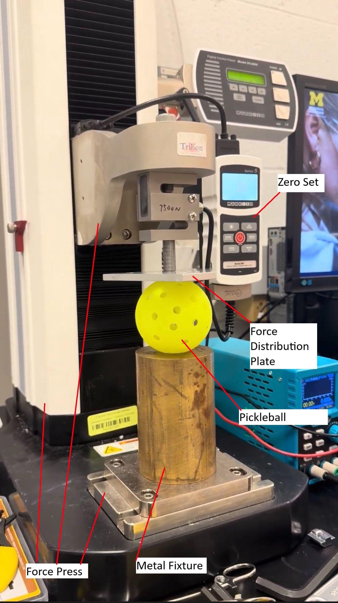
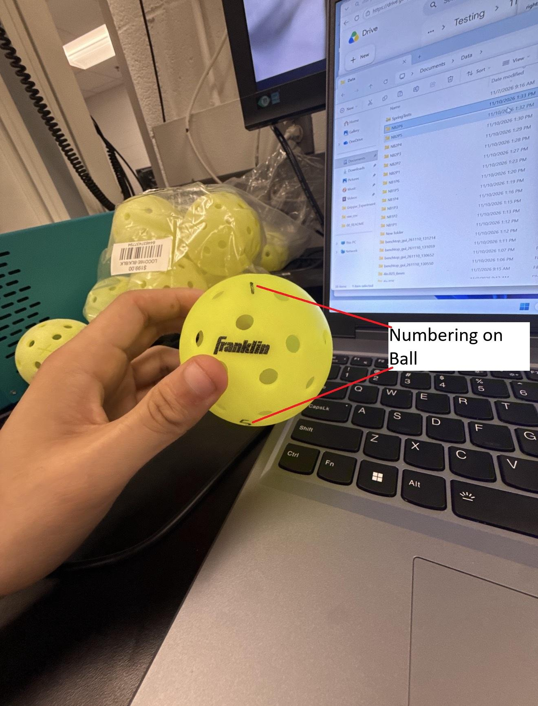
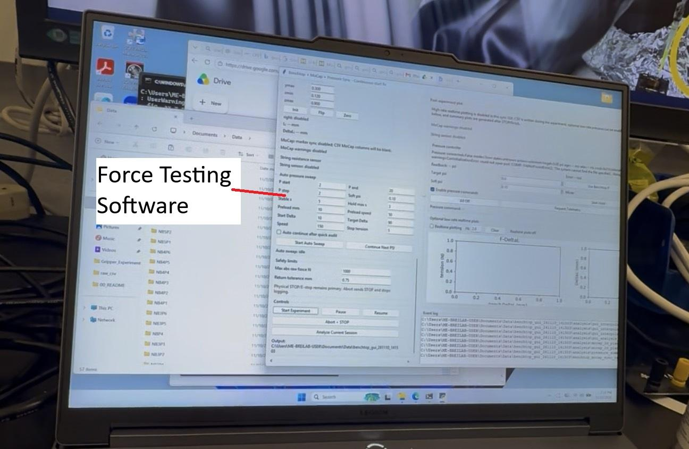
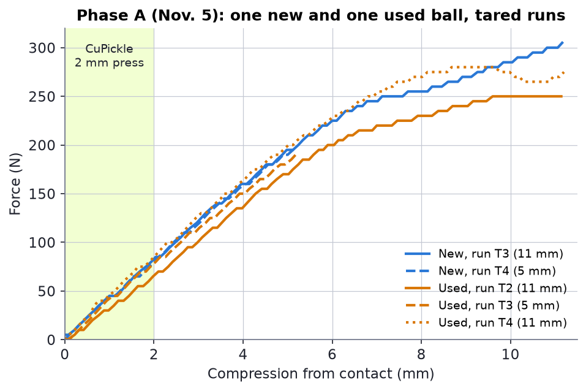
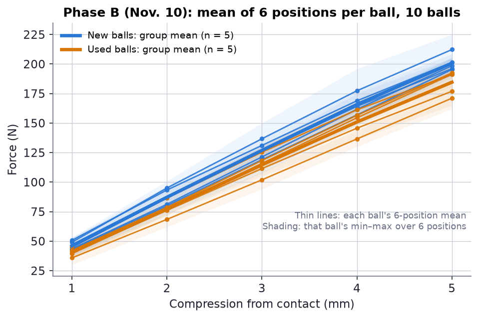
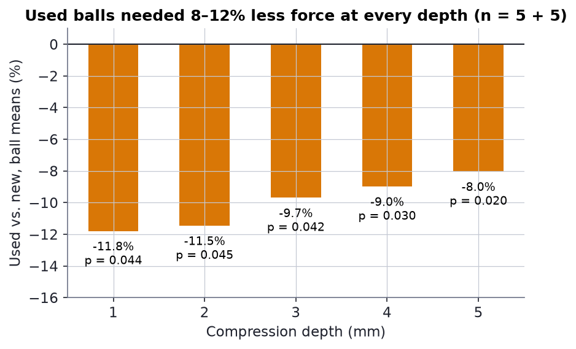
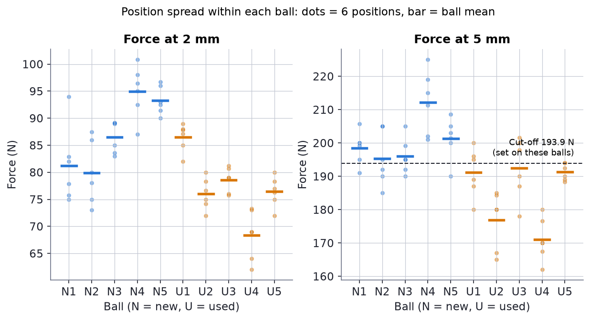
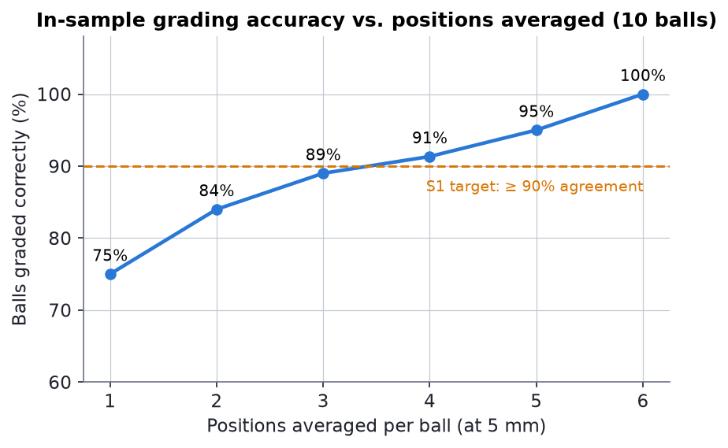

Gate Review 3 · Validation and Verification
Validation and verification status and plans
One engineering test is complete: a two-phase compression study showing used balls need 8–12% less force than new ones at every depth from 1 to 5 mm. It supports the grading principle (driver 1) and informed the move to one press at a fixed spot (driver 3). Everything that needs the POC (single-press accuracy, gauge R&R, stall thrust, ball damage, cycle time and player trust) is planned with criteria, procedures and dates below.
Validation matrix
Method types: A analysis, I inspection, D demonstration, E engineering test, U user test.
| Requirement / driver / failure mode | Success criterion | Method | MVP element | POC configuration | Differences affecting interpretation | Trials | Equipment | Status | Result | Conclusion |
|---|---|---|---|---|---|---|---|---|---|---|
| Driver 1: worn balls measurably softer; FMEA 288 | Ball-level difference at fixed depth, p < 0.05 | E (Activity 1) | Measurement principle | Instron press, flat plate (not the POC) | Different fixture and contact; unknown play history | 5 + 5 balls × 6 positions | Instron press | Done | −11.5% at 2 mm (p = 0.045); −8.0% at 5 mm (p = 0.020) | Supported (preliminary) |
| S1 / Driver 1: grade agreement; FMEA 288 | ≥ 90% agreement with bounce test, thresholds frozen | E (Activity 2a) | Grading firmware, force path | Full POC | Breadboard electronics | ≥ 20 held-out balls | POC, USAP drop rig | Planned | — | Open |
| Driver 1: ratio vs. Pickleball Science | Within 0.05 of 0.90 (4 games) and 0.80 (8 games) | E (2a) | Grading | Full POC | As above | X-40s at 0, 4, 8 games | POC, thermometer | Planned | — | Open |
| Driver 3: single press at the peg; FMEA 392 | Re-seat spread ≤ 5% of stiffness | E (2b) | Peg and plate | Full POC | None | 5 balls × 20 re-seats | POC, marked balls | Planned | In-sample random spot: 75% | Open |
| S16 / Driver 2: repeatability; FMEA 175 | %GRR < 10 | E (2c) | Measurement chain | Full POC | Breadboard noise: conservative | 10 balls × 3 operators × 3 | POC, steel ball | Planned | Analysis: ratio error 0.005 | Analysis only |
| S2 / Driver 2: resolution | Travel error ≤ 0.025 mm | A + I (2c) | Drive | Full POC | None | 10 approaches | 0.01 mm dial indicator | Planned | Analysis: 0.0025 mm/step | Analysis only |
| Load-cell overload; safety | Stall thrust ≤ 177 N | E (2d) | Drive current setting | Full POC | None | 3 stalls | Digital force gauge | Planned | Analysis: 177 N | Analysis only |
| S4: no ball damage; FMEA 84 | Rebound change < 0.5 in. after 50 tests | E (2e) | 2 mm press | Full POC | None | 3 balls + 3 controls | Drop rig, POC | Planned | — | Open |
| S12: durability | 1,000 test cycles with no failure; steel-ball reading within ±2% of its start value; Carriage runs without binding | E (2g) | Drive, bushing, rod, load cell | Full POC | Aluminium rod (MVP steel): wear is conservative | 1,000 cycles | POC, steel reference ball | Planned | Analysis: infinite fatigue life | Analysis only |
| S7 / Driver 4: cycle time | ≤ 30 s first use | A + E + U | Whole sequence | Full POC | No door interlock or touchscreen | 10 first-time users | Timestamps, stopwatch | Planned | Analysis: ≈ 10 s | Analysis only |
| S5 / Driver 5: confidence | Mean gain ≥ 2 points (7-point); trust ≥ 4/5 | U (Activity 3) | Result presentation | POC + screen mock-up | OLED vs. touchscreen | ≥ 21 players | Coded balls, survey | Planned | — | Open |
| S8: routine | ≤ 2 actions; ≥ 90% unassisted completion | U (3) | Load, close, start | POC + mock-up | No door on POC | ≥ 21 players | Observation sheet | Planned | Sequence has 4 actions | At risk |
| S14: appearance | ≥ 75% of players rate the look 5 or higher on a 1–7 scale | U (3) | Case form, color and finish | MVP renders + printed POC case | Printed case finish differs from molded ABS | ≥ 21 players | Renders, survey | Planned | — | Open |
| Door interlock; FMEA 48, 90 | No open-door start; door opening stops motion, no restart | D | Reed switch | First MVP build | Not on POC | 10 per condition | Non-human probe | After POC | — | Open |
| S9, S10: portability | ≤ 2.5 L, ≤ 2 kg | A + I | Packaged MVP | CAD | POC case is printed | 1 | CAD, scale | Done (CAD) | 3.3 L; 2.15 kg + electronics | Not met |
| FMEA 210: model and temperature | Same-session reference drifts ≤ 2% | E | Reference management | Full POC | External thermometer | Every session | Thermometer | Planned | — | Open |
Activity 1: Compression study on new and used balls (complete)
| Goal | Driver 1: does a plate press separate used from new balls at equal depth? Also informs driver 3: how much does the reading change with position on one ball? |
|---|---|
| Hypothesis | Used balls need less force at equal displacement; position-to-position spread is smaller than the new–used gap. |
| Success criterion | Exploratory: ball-level group difference at p < 0.05 (Welch). This study does not test the ≥ 90% bounce-agreement requirement. |
| Configuration | Phase A (Nov. 5): one new and one used ball, presses to 1, 5 and 11 mm. Phase B (Nov. 10): five new and five used balls, six marked positions each, presses to 5 mm (60 runs). |
| Connection to MVP | Tests the measurement principle. It does not use CuPickle's motor, load cell, peg or electronics. |
| Equipment | Instron press (5 N display step), flat aluminium distribution plate, ball held in the groove of a metal block, PC logging software (benchtop GUI); Prof. Diann Brei's lab, G.G. Brown Laboratory. |
| Variables | Independent: ball condition, position, depth. Dependent: force (N). Controlled: fixture, plate, zeroing at first firm contact, 5 mm target. Not controlled: play history, ball model mix, room temperature, recovery time between positions. |
| Samples | 10 balls; the ball, not the position, is the unit for group comparisons. |
| Safety | Hands clear of the press during motion; jog controls untouched with hands under the press; safety glasses; a second person present. Stop and isolate if the ball cracks or the fixture moves. |






Procedure
- Set the software to depth control, 5 mm target.
- Number six positions on each ball, each between holes.
- Raise the press, place the fixture, seat the ball in its groove with position 1 up, and center it under the gauge.
- Place the distribution plate on the ball; jog down to first firm contact.
- Zero force and depth.
- With hands clear, start the press; it compresses and logs force and travel.
- Jog up, remove the plate, rotate to the next position, repeat steps 4–6 for all six.
- Repeat for all ten balls; save each run separately.
Analysis
Force at 1–5 mm is linearly interpolated between the two logged samples either side of each depth on the pressing stroke. Each ball's six positions are averaged first; group means are the mean of five ball means. Difference = (F̄used − F̄new) / F̄new; significance by Welch's two-tailed t-test on ball means (n = 5 per group). Stiffness is the slope of force against depth over 1–5 mm. Every formula and the raw values are in compression-test-analysis.xlsx (sheet "Method & Equations").





Results
| Depth | New mean (N) | Used mean (N) | Used vs. new | p (Welch) |
|---|---|---|---|---|
| 1 mm | 46.1 | 40.6 | −11.8% | 0.044 |
| 2 mm | 87.2 | 77.2 | −11.5% | 0.045 |
| 3 mm | 126.8 | 114.6 | −9.7% | 0.042 |
| 4 mm | 165.8 | 150.9 | −9.0% | 0.030 |
| 5 mm | 200.7 | 184.6 | −8.0% | 0.020 |
| Stiffness, 1–5 mm | 38.8 N/mm | 36.2 N/mm | ratio 0.932 | 0.043 |
At 5 mm every used ball's mean (highest 192.4 N) sat below every new ball's (lowest 195.3 N), but by less than one 5 N gauge step. With a cut-off at the midpoint (193.9 N), one random position graded correctly 75% of the time, four positions 91%, six 100%. The cut-off was set on the same ten balls, so these accuracies are optimistic. Measured new-ball stiffness was 2.3× the published value, most likely from the fixture and contact geometry, so only ratios are used.
Conclusion. Driver 1 has preliminary support: the sampled used balls were distinguishable from new ones. The study does not establish bounce agreement, the absolute stiffness, a play-time relationship, or single-press accuracy at a fixed spot. Design decisions from it: grade on ratios; press 2 mm (linear region, 11.5% signal); seat the ball on a peg so position scatter is removed rather than averaged. Next action: repeat with X-40s of known play history (0, 4, 8 games) on the POC, with thresholds set on separate balls.
Activity 2: POC engineering tests (planned)
Why no results yet. The POC parts are awaiting shop approval of the revised drawings, and powered tests wait for the safety review. Risk of the missing evidence: the grading principle may not transfer to one press at one fixed spot, and noise or flex in the real frame may hide the 10 N signal. When: Nov. 30–Dec. 4, ahead of Design Expo on Dec. 10.
Configuration: full POC (POC page), firmware logging raw force and step count at 80 samples/s, press 2 mm from a 0.5 N contact. Connection to MVP: identical force path, so results stand for the MVP except for electronics noise (upper bound). Variables: independent: ball, operator, repetition, speed; dependent: force, stiffness, ratio, grade, time; controlled: temperature (70 ± 5 °F), firmware version, contact threshold, recovery time (2 min between presses on a ball).
| Test | Hypothesis | Procedure | Samples | Analysis | Criterion |
|---|---|---|---|---|---|
| 2a. Grading and ratio | One press grades ≥ 90% of balls like the bounce test | Set thresholds on 10 training balls; freeze; blind and randomize 20 held-out balls; drop-test each from 78 in. onto granite | ≥ 20 held-out balls; X-40s at 0, 4, 8 games | Agreement table; false PLAY / false RETIRE counts; 95% interval | ≥ 90%; ratio within 0.05 |
| 2b. Re-seat spread | The peg puts the plate on the same spot | Lift and re-seat a marked ball 20 times, pressing each time | 5 balls × 20 | Standard deviation / mean of stiffness | ≤ 5% |
| 2c. Gauge R&R and travel | Measurement error is small next to ball-to-ball variation | Crossed study, randomized order, reload between repeats; dial indicator on the Carriage for 10 approaches | 10 balls × 3 operators × 3 | %GRR = 100 × 6σGRR / tolerance; travel error | %GRR < 10; ≤ 0.025 mm |
| 2d. Stall thrust | Current limit holds thrust under 177 N | Press the force gauge with the plate until the motor stalls | 3 stalls | Peak force | ≤ 177 N |
| 2e. Ball damage | 2 mm presses do not change the bounce | Drop-test 3 balls and 3 controls; 50 tests on the 3; drop-test all after 24 h | 3 + 3 | Rebound change vs. controls | < 0.5 in. |
| 2f. Speed and time | Stiffness at 4 mm/s within 1% of 2 mm/s | Same ball at both speeds, alternating; firmware timestamps | 5 balls × 3 | Paired difference | < 1%; ≤ 30 s |
| 2g. Durability | The press survives 1,000 cycles without drift or wear | Automated cycles on the steel reference ball and a spare pickleball; steel-ball check every 100 cycles; inspect rod and bushing at the end | 1,000 cycles | Steel-ball reading vs. cycle count | No failure; drift ≤ 2% |
Safety plan: safety review first; trained operator plus observer at the bench-supply switch; case closed during presses; current limit set and stall-tested before any ball test; eye protection; stop for binding, abnormal noise, cracking or unexpected motion and isolate power before touching the mechanism. Data: raw CSV per press, the analysis workbook and a session log (temperature, operator, firmware version) will be linked here.
Activity 3: User validation (planned)
Research question. Can frequent players run a test and interpret PLAY, RETIRE and CHECK BALL without help, and does a measured result raise their confidence more than their own check?
Participants. ≥ 21 adults who play at least weekly, including competitive and older players, recruited at courts and leagues; team members pilot the procedure but do not count.
Task. "You are about to play. Check this ball with the device, then tell us the result and what you would do."
Measures. Completion without help (effectiveness), time and actions (efficiency), interpretation errors, comfort (1–5), confidence before and after (1–7), trust (1–5), appearance (1–7; approval = 5 or higher, target ≥ 75% of players).
Ethics and privacy. Voluntary; may stop at any time; recording only with separate permission; coded participant numbers; no names stored with data. Players are told grades are prototype results, not certification.
POC vs. MVP interaction. The POC has no door interlock and uses an OLED, so players operate it with the case closed under supervision and see the result screens below on a tablet mock-up; findings on screens transfer, timing on the door does not.
Result screens to be tested
Figure V6. Result states from the Activity 26 accessibility analysis: each differs in shape, word and sound, so it does not rely on colour or on reading English alone (Activity 26 figure).

Procedure
- Consent script; record coded characteristics (play frequency, years playing, age band).
- Participant checks three coded balls by their usual method and rates confidence (1–7).
- Uncoached first use on the same balls, timed from picking up the tester to stating a decision.
- Participant states the result and next action; observer logs actions, errors and help needed.
- Ratings: confidence, trust, comfort, appearance; then the CHECK BALL and CLOSE DOOR states are shown and interpreted.
- Second, practiced use, timed again; open-ended questions; debrief (balls are not discarded on prototype grades).
Analysis. Participants are the unit; paired confidence gain with mean, median and 95% interval; share meeting 30 s; interpretation accuracy per state; themes from comments. Limitations: a convenience sample of about 21 cannot establish broad acceptance or universal accessibility. Design changes will be tied to observed barriers and re-tested.
Schedule to Design Expo
| Dates (2026) | Activity |
|---|---|
| Nov. 17–20 | Revise drawings; shop approval; firmware for logging |
| Nov. 20–26 | Machine parts, print case, wire, assemble; safety review |
| Nov. 30–Dec. 1 | Stall thrust (2d), calibration, travel check |
| Dec. 1–4 | Gauge R&R (2c), re-seat (2b), grading (2a), speed (2f); start damage study (2e) |
| To be decided | User sessions (Activity 3): dates and venue to be decided |
| Dec. 7–9 | Analysis, FMEA re-rating, revisions |
| Dec. 10 | Design Expo |
Dates are targets. If hardware or safety review slips, the affected requirements stay open and are reported as open.
Validation conclusions
- Supported by test evidence: worn balls are measurably softer under plate compression (preliminary, 10 balls, laboratory fixture).
- Shown only by analysis: resolution, frame compliance and ratio error, stall thrust, structural margins, cycle time.
- Not yet demonstrated: bounce agreement, single-press accuracy at the peg, %GRR, ball damage, confidence, the interlock, portability and cost targets.
- Inadequate or at risk: one random spot graded only 75% correctly in-sample; size (3.3 L) and actions (4) miss their targets.
- Changes required: none to the force path; drawing revisions and the safety review before POC testing.
- Effect of changes on earlier work: moving from rollers to a peg does not invalidate the compression data but means its position-averaging accuracy does not transfer; single-press tests must be repeated on the POC.
- Limits from POC differences: battery, touchscreen, interlock and molded case results come from the first MVP build, not the POC.
- Proceed? Yes, with specified revisions and staged validation. The evidence supports building and testing the POC, not declaring CuPickle validated.
References
- [1] USA Pickleball, Equipment Standards Manual, Jan. 2025, §§2.D.5–2.D.7 (bounce: 30–34 in. from 78 in. onto granite at 70 ± 5 °F). usapickleball.org
- [2] Minitab, "Interpret the key results for Crossed Gage R&R Study." support.minitab.com
- [3] Pickleball Science, "How Many Games Will a Pickleball Last?" 2023. pickleballscience.org
- [4] Team 1, compression test data and analysis workbook, Nov. 2026. On this site: compression-test-analysis.xlsx.